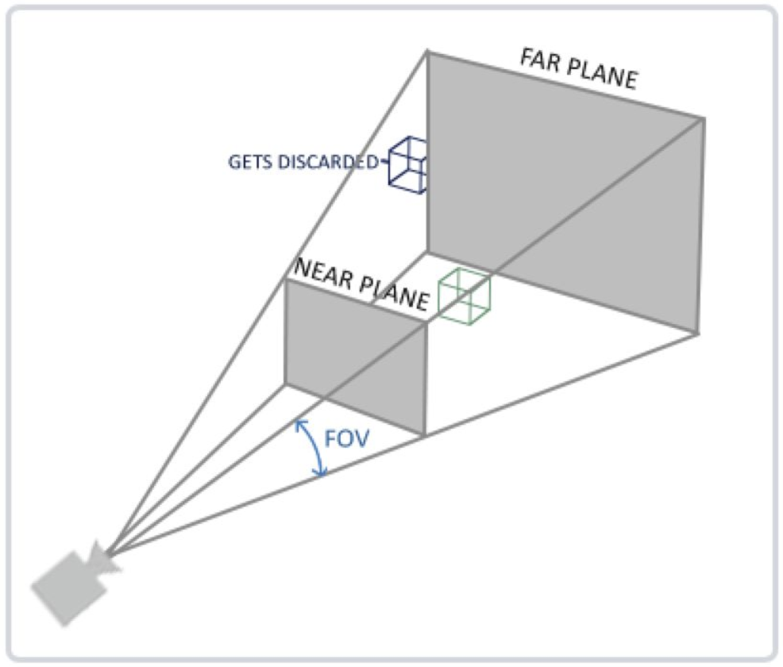
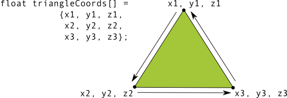

OpenGL基本概念
Contents
摘自OpenGL和OpenGL ES相关文档
概述
OpenGL是一种跨平台的图形API，支持高性能2D和3D图形以及GPU加速。OpenGL ES是OpenGL规范的一种形式，适用于嵌入式设备。WebGL基于OpenGL ES。
OpenGL ES版本对比：
- OpenGL ES 1.0/1.1 的API更简单；2.0、3.0的性能更好，API相对复杂些，但是提供了更多定制接口，能够实现更复杂、绚丽的效果。
- OpenGL ES 2.0 和 3.0 的图形编程基本相似，不同之处在于版本 3.0 表示 2.0 API 与其他功能的超集。
- OpenGL ES 3.0 API 能够最好地支持纹理压缩，因为它保证了支持透明度的 ETC2 压缩格式的可用性。1.x 和 2.0 API 实现通常包含对 ETC1 的支持，但这种纹理压缩格式不支持透明度。
状态机
OpenGL自身是一个巨大的状态机(State Machine)：一系列的变量描述OpenGL此刻应当如何运行。OpenGL的状态通常被称为OpenGL上下文(Context)。我们使用当前OpenGL上下文来渲染图像。
当使用OpenGL的时候，我们会遇到一些状态设置函数(State-changing Function)，这类函数将会改变上下文。以及状态使用函数(State-using Function)，这类函数会根据当前OpenGL的状态执行一些操作。
只要你记住OpenGL本质上是个大状态机，就能更容易理解它的大部分特性。
|
|
状态机不是实际机器设备，而是一个数学模型，通常体现为一个状态转换图。涉及到的相关概念是State状态，Event事件，Action动作（事件发生以后要执行动作。例如事件是“按开门按钮”，动作就是“开门”。编程的时候，一个 Action一般就对应一个函数），Transition 转换（也就是从一个状态变化为另一个状态）。
着色器&着色器语言
着色器(shader)是在GPU上执行的小程序。对应的开发语言就是着色器语言（OpenGL Shading Language，GLSL）。
GLSL是一种面向过程的编程语言，有着与C语言类似的语法，但没有C语言复杂的指针概念。
顶点着色器&片元着色器
顶点着色器：一般用于处理图形每个顶点的变换（旋转/平移/投影等）。顶点着色器是OpenGL中用于计算顶点属性的程序，顶点着色器是逐顶点运算的程序，也就是说每个顶点数据都会执行一次顶点着色器，这是并行的。
片元着色器：也称为片段着色器。一般用来处理图形中每个像素点颜色的计算和填充。片段着色器是OpenGL中用于计算片段（像素）颜色的程序，是逐像素运算的程序，也就是说每个像素都会执行一次片段着色器，当然也是并行的。
顶点着色器示例：
|
|
片元着色器示例：
|
|
上例着色器中，gl_Position 、gl_FragColor等这些以 gl_ 开头的变量都是内置变量，通过给这些特殊的变量赋值，可以完成与硬件的通讯。其中gl_Position用于放置顶点坐标信息，gl_FragColor用于设置当前片段的颜色。
光栅化(Rasterization)
百科：光栅化（Rasterization）是把顶点数据转换为片段的过程。
这个词儿Adobe官方翻译成栅格化或者像素化。没错，就是把矢量图形转化成像素点儿的过程。我们屏幕上显示的画面都是由像素组成，而三维物体都是点线面构成的。要让点线面，变成能在屏幕上显示的像素，就需要Rasterize这个过程。就是从矢量的点线面的描述，变成像素的描述。
渲染管线
渲染管线是指三维渲染的过程中显卡执行的、从原始图形数据到最终渲染图像的、数据传输处理计算的过程。
图形渲染管线接受一组3D坐标，然后把它们转变为你屏幕上的像素输出。图形渲染管线可以被划分为几个阶段，每个阶段将会把前一个阶段的输出作为输入。
下面是一个图形渲染管线的每个阶段的抽象展示，蓝色部分代表的是我们可以注入自定义的着色器的部分：

顶点数据是用 顶点属性(Vertex Attribute) 表示的，它可以包含任何我们想用的数据（比如顶点的位置、顶点法线、顶点大小、颜色、纹理坐标等）。
图形渲染管线的第一个部分是顶点着色器(Vertex Shader)，它把一个单独的顶点作为输入。顶点着色器主要的目的是把3D坐标转为另一种3D坐标（后面会解释），同时顶点着色器允许我们对顶点属性进行一些基本处理。
图元：为了让OpenGL知道我们的坐标和颜色值构成的到底是什么，OpenGL需要你去指定这些数据所表示的渲染类型。我们是希望把这些数据渲染成一系列的点？一系列的三角形？还是仅仅是一个长长的线？做出这些提示的叫做图元(Primitive)，任何一个绘制指令的调用都将把图元传递给OpenGL。这是其中的几个：GL_POINTS(点)、GL_TRIANGLES（三角形）、GL_LINE_STRIP（线段）。
图元装配(Primitive Assembly) 阶段将顶点着色器输出的所有顶点作为输入（如果是GL_POINTS，那么就是一个顶点），并将所有的点装配成指定图元的形状。本节例子中是一个三角形。
图元装配阶段的输出会传递给几何着色器(Geometry Shader)。几何着色器把图元形式的一系列顶点的集合作为输入，它可以通过产生新顶点构造出新的图元来生成其他形状。例子中，它生成了另一个三角形。
几何着色器的输出会被传入光栅化阶段(Rasterization Stage)，这里它会把图元映射为最终屏幕上相应的像素，生成供片段着色器(Fragment Shader)使用的片段(Fragment)。在片段着色器运行之前会执行裁切(Clipping)。裁切会丢弃超出你的视图以外的所有像素，用来提升执行效率。（OpenGL中的一个片段是OpenGL渲染一个像素所需的所有数据。）
片段着色器的主要目的是计算一个像素的最终颜色，这也是所有OpenGL高级效果产生的地方。通常，片段着色器包含3D场景的数据（比如光照、阴影、光的颜色等等），这些数据可以被用来计算最终像素的颜色。
在所有对应颜色值确定以后，最终的对象将会被传到最后一个阶段，我们叫做测试和混合阶段。这个阶段检测片段的对应的深度（深度可以简单的理解为z坐标，它代表一个片段在空间中和你的距离），用它们来判断这个像素是在其它物体的前面还是后面，决定是否应该丢弃。这个阶段也会检查alpha值（alpha值定义了一个物体的透明度）并对物体进行混合(Blend)。所以，即使在片段着色器中计算出来了一个像素输出的颜色，在渲染多个三角形的时候最后的像素颜色也可能完全不同。
可以看到，图形渲染管线非常复杂，它包含很多可配置的部分。然而，对于大多数场合，我们只需要配置顶点和片段着色器就行了。几何着色器是可选的，通常使用它默认的着色器就行了。在现代OpenGL中，我们必须定义至少一个顶点着色器和一个片段着色器（因为GPU中没有默认的顶点/片段着色器）。
坐标系统
另参见
OpenGL和OpenGL ES/OpenGL/1.OpenGL坐标系统详解。
概述
OpenGL希望在每次顶点着色器运行后，我们可见的所有顶点都为标准化设备坐标(Normalized Device Coordinate, NDC，等价于裁剪空间坐标)。我们通常会自己设定一个坐标的范围，之后再在顶点着色器中将这些坐标变换为标准化设备坐标。然后将这些标准化设备坐标传入光栅器(Rasterizer)，将它们变换为屏幕上的坐标和像素。
将坐标变换为标准化设备坐标（也就是裁剪空间坐标），接着再转化为屏幕坐标的过程通常是分步进行的，也就是类似于流水线那样子。在流水线中，物体的顶点在最终转化为屏幕坐标之前还会被变换到多个坐标系统(Coordinate System)。将物体的坐标变换到几个过渡坐标系(Intermediate Coordinate System)的优点在于，在这些特定的坐标系统中，一些操作或运算更加方便和容易，这一点很快就会变得很明显。对我们来说比较重要的总共有5个不同的坐标系统：
- 局部空间(Local Space，或者称为物体空间(Object Space))
- 世界空间(World Space)
- 观察空间(View Space，或者称为视觉空间(Eye Space))
- 裁剪空间(Clip Space)
- 屏幕空间(Screen Space)
这就是一个顶点在最终被转化为片段之前需要经历的所有不同状态。
下面的这张图展示了整个流程以及各个变换过程做了什么：

- 局部坐标是对象在局部坐标系中的坐标，也是物体起始的坐标。
- 下一步是将局部坐标变换为世界坐标。世界空间是一个更大的空间，世界坐标是物体在世界坐标系中的坐标。
- 接下来我们将世界坐标变换为观察空间坐标，使得每个坐标都是从摄像机或者说观察者的角度进行观察的。
- 坐标到达观察空间之后，我们需要将其投影为裁剪坐标，并判断哪些顶点将会出现在屏幕上。
- 最后，我们将裁剪坐标变换为屏幕坐标，我们将使用一个叫做视口变换(Viewport Transform)的过程。视口变换将位于-1.0到1.0范围的NDC坐标变换到由glViewport函数所定义的坐标范围内。最后变换出来的坐标将会送到光栅器，将其转化为片段。
我们之所以将顶点变换到各个不同的空间的原因是有些操作在特定的坐标系统中才有意义且更方便。例如，当需要对物体进行修改的时候，在局部空间中来操作会更说得通；如果要对一个物体做出一个相对于其它物体位置的操作时，在世界坐标系中来做这个才更说得通，等等。如果我们愿意，我们也可以定义一个直接从局部空间变换到裁剪空间的变换矩阵，但那样会失去很多灵活性。
注意：WebGL中没有glViewPort函数。WebGL中的视口就是canvas。
局部空间
局部空间是指最初构建物体时所使用的坐标空间。
假设你需要绘制10个物体，并将他们散布到不同的地方。那么：
- 首先你可以在局部空间中构建这10个物体，不必关心他们将要摆放的位置。它们的局部空间坐标可以一样，比如左下角都是(-1,-1)，右上角都是(1,1)。
- 然后你可以把这10个物体放置到世界空间中的不同位置，也就是给他们不同的世界空间坐标。
世界空间
通过模型矩阵将局部坐标变换为世界坐标（也就是将物体从局部空间变换到世界空间）。
模型矩阵是一种变换矩阵，它能通过对物体进行平移、旋转、缩放等来将它置于它本应该在的位置或朝向。你可以想像一个房子，你需要先将它缩小（它在局部空间中太大了），并将其位移至郊区的一个小镇，然后在y轴上往左旋转一点以搭配附近的房子。
观察空间
观察空间(View Space)经常被人们称为摄像机空间(Camera Space)或视觉空间(Eye Space)。观察空间就是从摄像机的视角所观察到的空间。而这通常是由对目标的一系列位移和旋转来完成。
本质上是将我们的摄像机即眼睛从当前位置旋转平移到我们希望的位置。因为摄像机和被观察物体的相对位置关系，因此旋转平移被观察物体和旋转平移摄像机是等价的。
裁剪空间
在一个顶点着色器运行的最后，OpenGL期望所有的坐标都能落在一个特定的范围内，且任何在这个范围之外的点都应该被裁剪掉(Clipped)。
为了将顶点坐标从观察空间变换到裁剪空间，我们需要定义一个投影矩阵(Projection Matrix)。由投影矩阵创建的观察箱(Viewing Box)被称为截椎体(Frustum)，每个出现在截椎体范围内的点都会最终出现在用户的屏幕上，而截椎体范围外的点将会被裁减掉。
一旦所有顶点被变换到裁剪空间，最终的操作——透视除法(Perspective Division)将会执行，在这个过程中我们将位置向量的x，y，z分量分别除以向量的齐次w分量。透视除法是将4D裁剪空间坐标变换为3D标准化设备坐标的过程。这一步会在每一个顶点着色器运行的最后被自动执行。
在这一阶段之后，最终的坐标将会被映射到屏幕空间中（使用glViewport中的设定），并被变换成片段。
整个流程
一个顶点坐标将会根据以下过程被变换到裁剪坐标：

注意矩阵乘法没有交换律而只有结合律，因此顶点坐标是按从右往左的顺序与各个矩阵相乘的。最后的顶点应该被赋值到顶点着色器中的gl_Position（裁剪坐标）。
OpenGL然后对裁剪坐标执行透视除法从而将它们变换到标准化设备坐标。OpenGL会使用glViewPort内部的参数来将标准化设备坐标映射到屏幕坐标，每个坐标都关联了一个屏幕上的点（在我们的例子中是一个800x600的屏幕）。这个过程称为视口变换。
|
|
其他
关于投影矩阵

通过投影矩阵来将要显示的物体投影到截椎体的near面上，near的宽高比需要与显示区域(对于WebGL，就是canvas)的宽高比一致，这样，将near上的投影图像显示到显示区域时，图像就不会被拉伸变形。
环绕和正反面
在 OpenGL 中，形状的面是由三维空间中的三个或更多点定义的表面。如何知道哪一面为正面，哪一面为背面呢？答案是与环绕（即您定义形状的点的顺序）有关。

默认情况下，在 OpenGL 中，沿逆时针方向绘制的面为正面。
面剔除
面剔除(Face culling)是 OpenGL 环境的一个选项，它允许渲染管线忽略（不计算或不绘制）形状的背面，从而节省时间和内存并缩短处理周期。